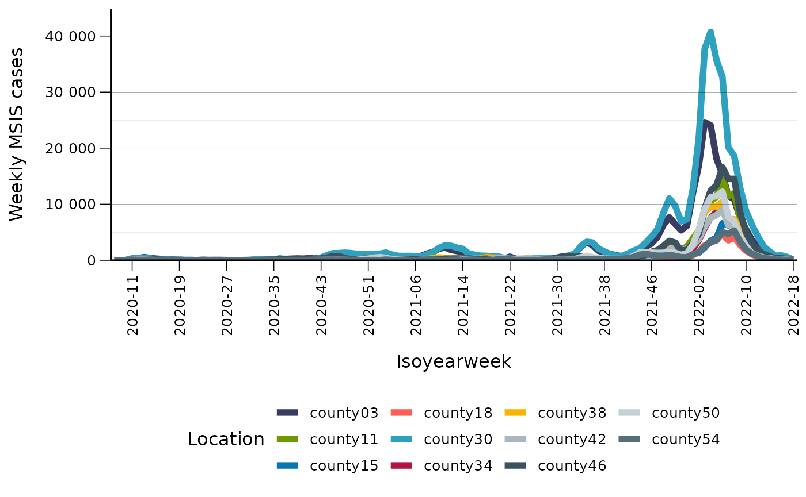
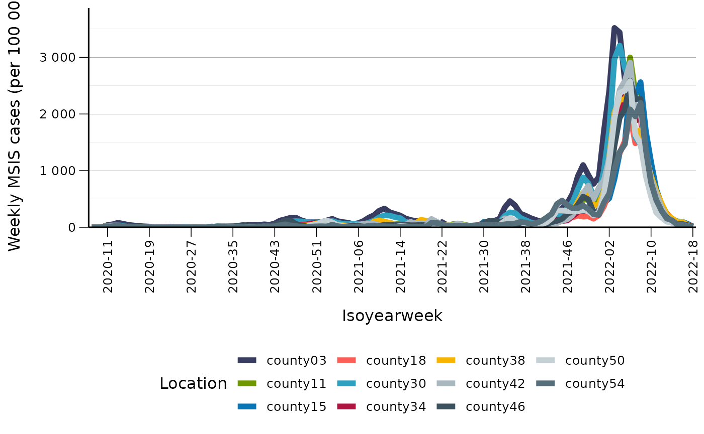
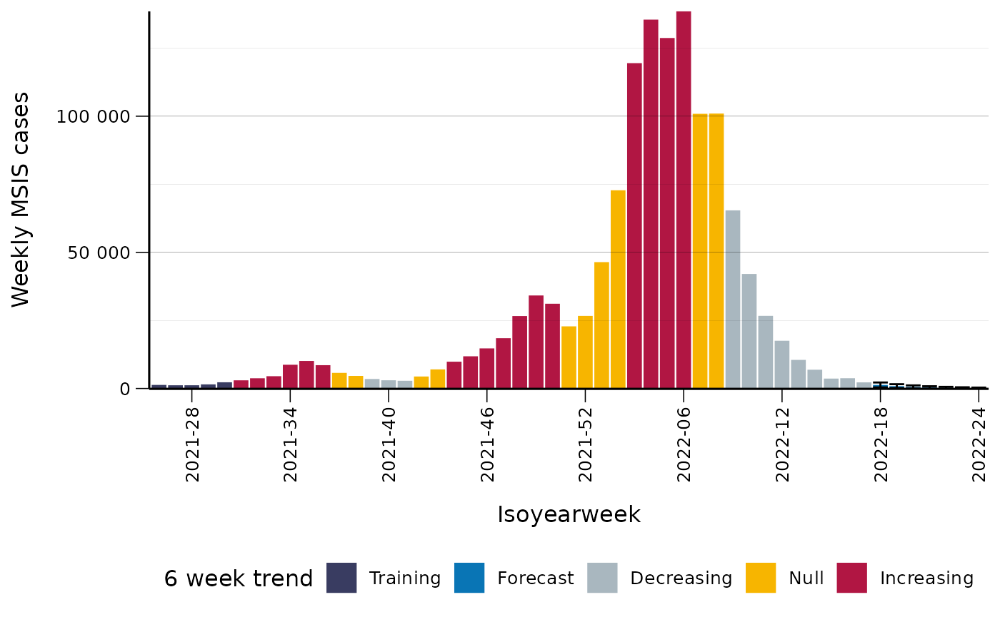

Short term trend for COVID cases Part 1 epicurve
Chi Zhang
2022-05-30
Source:../vignettes/short_term_trend_msis.Rmd
short_term_trend_msis.RmdIn this vignette we illustrate how to compute short term trend with splalert::short_term_trend.
Covid-19 MSIS cases
The Covid-19 cases (lab confirmed) for Norway, for each county and the whole nation. The data does not distinguish age groups or sex.
This dataset is extracted on 2022-05-04. The time period is from 2020-02-21 to 2022-05-03.
The data in csv and xlsx formats can be found on our Github repository.
Data in spltidy format
We have prepared the data into spltidy format, from which we can see the summary of each column, such as data type and amount of missing data.
d_msis <- spltidy::norway_covid19_cases_by_time_location
# check the column names
colnames(d_msis)
#> [1] "granularity_time" "granularity_geo"
#> [3] "country_iso3" "location_code"
#> [5] "border" "age"
#> [7] "sex" "isoyear"
#> [9] "isoweek" "isoyearweek"
#> [11] "season" "seasonweek"
#> [13] "calyear" "calmonth"
#> [15] "calyearmonth" "date"
#> [17] "covid19_cases_testdate_n" "covid19_cases_testdate_pr100000"Understand the data
(granularity geo and location codes)
(one visualization of counts for each county)
d_fylke <- copy(d_msis[granularity_time == 'isoweek'& granularity_geo == 'county'] )
q <- ggplot(d_fylke, aes(x = isoyearweek, y = covid19_cases_testdate_n))
q <- q + geom_line(aes(group = location_code, col = location_code),size = 2)
q <- q + scale_y_continuous("Weekly MSIS cases",
expand = expansion(mult = c(0, 0.1)),
labels = splstyle::format_nor_num_0)
q <- q + scale_x_discrete("Isoyearweek",
breaks = splstyle::every_nth(8))
q <- q + splstyle::scale_color_fhi("Location", palette = "primary")
q <- q + splstyle::theme_fhi_lines_horizontal(legend_position = "bottom")
q <- q + splstyle::set_x_axis_vertical()
# need watermark!!
q
(another visualization of pr, including the nation)
q <- ggplot(d_fylke, aes(x = isoyearweek, y = covid19_cases_testdate_pr100000))
q <- q + geom_line(aes(group = location_code, col = location_code),size = 2)
q <- q + scale_y_continuous("Weekly MSIS cases (per 100 000)",
expand = expansion(mult = c(0, 0.1)),
labels = splstyle::format_nor_num_0)
q <- q + scale_x_discrete("Isoyearweek",
breaks = splstyle::every_nth(8))
q <- q + splstyle::scale_color_fhi("Location", palette = "primary")
q <- q + splstyle::theme_fhi_lines_horizontal(legend_position = "bottom")
q <- q + splstyle::set_x_axis_vertical()
# need watermark!!
q
1. weekly trend
(maybe not the whole period, only visualise one year)
(nation, each county)
d_msis_norge <- copy(d_msis[granularity_time == 'isoweek' &
isoyearweek >= '2021-26' &
location_code == 'norge'])
trend_msis_norge <- splalert::short_term_trend(
d_msis_norge,
numerator = "covid19_cases_testdate_n",
trend_isoweeks = 6,
remove_last_isoweeks = 1
)
# colnames(trend_msis_norge)
# attach status for vis
trend_msis_norge[, covid19_cases_testdate_trend0_42_status := factor(
covid19_cases_testdate_trend0_42_status,
levels = c("training","forecast","decreasing", "null", "increasing"),
labels = c("Training","Forecast","Decreasing", "Null", "Increasing")
)]
# plot
q <- ggplot(trend_msis_norge, aes(x = isoyearweek,
y = covid19_cases_testdate_forecasted_n,
group = 1))
q <- q + geom_col(mapping = aes(fill = covid19_cases_testdate_trend0_42_status ))
q <- q + geom_errorbar(
mapping = aes(
ymin = covid19_cases_testdate_forecasted_predinterval_q02x5_n,
ymax = covid19_cases_testdate_forecasted_predinterval_q97x5_n
)
)
q <- q + scale_y_continuous("Weekly MSIS cases",
expand = c(0, 0.1),
labels = splstyle::format_nor_num_0)
q <- q + scale_x_discrete("Isoyearweek", breaks = splstyle::every_nth(6))
q <- q + expand_limits(y=0)
q <- q + splstyle::scale_fill_fhi("6 week trend", palette = "contrast")
q <- q + splstyle::theme_fhi_lines_horizontal(legend_position = "bottom")
q <- q + splstyle::set_x_axis_vertical()
q
In the part 2 of the COVID analysis, we demonstrate how to do the trend analysis for all the counties, and visualize the results in a map.